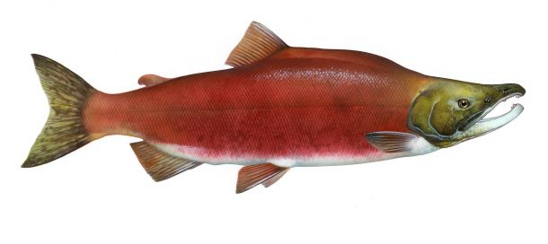

Chum
oncorhynchus keta
This salmon is also known as the dog, or calico salmon. Chum comes from a word meaning variegated coloration in the native language. They have the most widely distributed population and the greatest biomass. They are the second largest salmon (following the Chinook). Most populations reproduce near the mouth of their stream. When in the ocean they are metallic, greenish-blue along the back with black speckles which closely resemble sockeye and coho. During the spawning phase males get vertical bars in reds, greens, and purples, while females get a black horizontal stripe. These fish generally live 3-5 years, are 21-31in in length, and weigh about 6.5-12.5lbs.